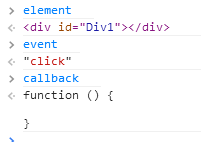
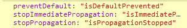

前言
核心组成
① 闭包变量、工具类方法定义
zepto = {};
这个变量贯穿始终，也是zepto与jQuery很不一样的地方，jQuery是一个类，会创建一个个实例，而zepto本身就只是一个对象......
② zepto与jQuery的$
$ = function(selector, context){ return zepto.init(selector, context) }
而我们开始便说了zepto只是一个对象，而zepto.init也仅仅是返回了一个类数组的东西，于是我们这里便看到了zepto与jQuery的惊人差异
③ zepto与jQuery的$.fn
$.fn = {};
1 var zepto = {}, $; 2 3 zepto.init = function (selector, context) { 4 var domArr = []; 5 //这个__proto__是系统级变量，我觉得zepto不该重置 ，但是不重置的话实例便找不到方法了！！！ 6 domArr.__proto__ = $.fn 7 domArr.selector = selector; 8 //一些列操作 9 return domArr; 10 }; 11 12 $ = function (selector, context) { 13 return zepto.init(selector, context); 14 }; 15 16 $.fn = { 17 addClass: function () { }, 18 attr: function () { } 19 };
这里有段非常关键的代码是：
domArr.__proto__ = $.fn；
1 dom.__proto__.constructor 2 function Array() { [native code] } 3 4 dom.__proto__.constructor 5 function Object() { [native code] } 6 7 zepto.Z = function(dom, selector) { 8 dom = dom || [] 9 dom.__proto__ = $.fn 10 dom.selector = selector || '' 11 return dom 12 } 13 //最后加上一句： 14 zepto.Z.prototype = $.fn
分解$方法
1 $('div'); 2 //=> all DIV elements on the page 3 $('#foo'); 4 //=> element with ID "foo" 5 6 // create element: 7 $("<p>Hello</p>"); 8 //=> the new P element 9 // create element with attributes: 10 $("<p />", { 11 text: "Hello", 12 id: "greeting", 13 css: { color: 'darkblue' } 14 }); 15 //=> <p id=greeting style="color:darkblue">Hello</p> 16 17 // execute callback when the page is ready: 18 $(function ($) { 19 alert('Ready to Zepto!') 20 });
我们现在来分析其每一种实现
选择器


zepto.qsa = function(element, selector){ var found, maybeID = selector[0] == '#', maybeClass = !maybeID && selector[0] == '.', nameOnly = maybeID || maybeClass ? selector.slice(1) : selector, // Ensure that a 1 char tag name still gets checked isSimple = simpleSelectorRE.test(nameOnly) return (isDocument(element) && isSimple && maybeID) ? ( (found = element.getElementById(nameOnly)) ? [found] : [] ) : (element.nodeType !== 1 && element.nodeType !== 9) ? [] : slice.call( isSimple && !maybeID ? maybeClass ? element.getElementsByClassName(nameOnly) : // If it's simple, it could be a class element.getElementsByTagName(selector) : // Or a tag element.querySelectorAll(selector) // Or it's not simple, and we need to query all ) }
创建元素
$("<p>Hello</p>");
这里依旧会经过zepto.init的处理，判断是否具有尖括号(<)，有的话便会进入神奇的fragment逻辑创建文档碎片
dom = zepto.fragment(selector, RegExp.$1, context)
zepto.fragment = function(html, name, properties) {}
到fragment方法时，会传入html和那么并且会有相关属性，但是我们一般不这样干，仅仅希望创建DOM
zepto.fragment = function(html, name, properties) { var dom, nodes, container // A special case optimization for a single tag if (singleTagRE.test(html)) dom = $(document.createElement(RegExp.$1)) if (!dom) { if (html.replace) html = html.replace(tagExpanderRE, "<$1></$2>") if (name === undefined) name = fragmentRE.test(html) && RegExp.$1 if (!(name in containers)) name = '*' container = containers[name] container.innerHTML = '' + html dom = $.each(slice.call(container.childNodes), function(){ container.removeChild(this) }) } if (isPlainObject(properties)) { nodes = $(dom) $.each(properties, function(key, value) { if (methodAttributes.indexOf(key) > -1) nodes[key](value) else nodes.attr(key, value) }) } return dom }
fn的实现
attr: function(name, value){ var result return (typeof name == 'string' && value === undefined) ? (this.length == 0 || this[0].nodeType !== 1 ? undefined : (name == 'value' && this[0].nodeName == 'INPUT') ? this.val() : (!(result = this[0].getAttribute(name)) && name in this[0]) ? this[0][name] : result ) : this.each(function(idx){ if (this.nodeType !== 1) return if (isObject(name)) for (key in name) setAttribute(this, key, name[key]) else setAttribute(this, name, funcArg(this, value, idx, this.getAttribute(name))) }) }, function setAttribute(node, name, value) { value == null ? node.removeAttribute(name) : node.setAttribute(name, value) }
html: function(html){ return arguments.length === 0 ? (this.length > 0 ? this[0].innerHTML : null) : this.each(function(idx){ var originHtml = this.innerHTML $(this).empty().append( funcArg(this, html, idx, originHtml) ) }) }, function funcArg(context, arg, idx, payload) { return isFunction(arg) ? arg.call(context, idx, payload) : arg }
事件实现
el.addEventListerner(type, fn, capture);
el.removeEventListerner(type, fn, capture);
两者参数需要完全一致，而我们的fn很多时候就是个匿名函数甚至是对象，很多时候定义后句柄引用就丢了，我们根本没法将其保持一致
事件注册
简单来说使用zepto绑定事件一般是这样：
$.click = function (fn) { return this.bind('click', fn); }
事实上他还是调用的$.bind实现事件绑定，换个思维方式，其实整个zepto事件实现可以浓缩成这么几句话：
var eventSet = { el: {fnType: []} }; function on(type, fn) {} function off(type, fn) {}
$.fn.on = function(event, selector, data, callback, one){ var autoRemove, delegator, $this = this if (event && !isString(event)) { $.each(event, function(type, fn){ $this.on(type, selector, data, fn, one) }) return $this } if (!isString(selector) && !isFunction(callback) && callback !== false) callback = data, data = selector, selector = undefined if (isFunction(data) || data === false) callback = data, data = undefined if (callback === false) callback = returnFalse return $this.each(function(_, element){ if (one) autoRemove = function(e){ remove(element, e.type, callback) return callback.apply(this, arguments) } if (selector) delegator = function(e){ var evt, match = $(e.target).closest(selector, element).get(0) if (match && match !== element) { evt = $.extend(createProxy(e), {currentTarget: match, liveFired: element}) return (autoRemove || callback).apply(match, [evt].concat(slice.call(arguments, 1))) } } add(element, event, callback, data, selector, delegator || autoRemove) }) }
这里的event可以是以空格分隔的字符串，一般情况下是单一的事件
event => 'mousedown touchstart'
event => 'click'

add在event事件中扮演了重要的角色
function add(element, events, fn, data, selector, delegator, capture){ var id = zid(element), set = (handlers[id] || (handlers[id] = [])) events.split(/\s/).forEach(function(event){ if (event == 'ready') return $(document).ready(fn) var handler = parse(event) handler.fn = fn handler.sel = selector // emulate mouseenter, mouseleave if (handler.e in hover) fn = function(e){ var related = e.relatedTarget if (!related || (related !== this && !$.contains(this, related))) return handler.fn.apply(this, arguments) } handler.del = delegator var callback = delegator || fn handler.proxy = function(e){ e = compatible(e) if (e.isImmediatePropagationStopped()) return e.data = data var result = callback.apply(element, e._args == undefined ? [e] : [e].concat(e._args)) if (result === false) e.preventDefault(), e.stopPropagation() return result } handler.i = set.length set.push(handler) if ('addEventListener' in element) element.addEventListener(realEvent(handler.e), handler.proxy, eventCapture(handler, capture)) }) }
第一段代码就很重要：
var id = zid(element) function zid(element) { return element._zid || (element._zid = _zid++) }
这里的zid非常关键，这里的element为与原生对象，这里在上面加了一个_zid的属性，这个属性会跟随其由始至终，不会丢失，如果是zepto封装的dom对象的话，就很容易丢失，因为每次根据$()创建的dom都是新的，这个_zid放到原生属性上是很有意义的
set = (handlers[id] || (handlers[id] = []))
我们所有绑定的事件以_zid为键值放在了外部闭包环境handlers对象中，每一个id对应的为一个数组，这个与绑定先后顺序相关
var handler = parse(event) handler.fn = fn handler.sel = selector function parse(event) { var parts = ('' + event).split('.') return {e: parts[0], ns: parts.slice(1).sort().join(' ')} }
handler = { e: 'click', ns: ''//我这里为null }
// emulate mouseenter, mouseleave if (handler.e in hover) fn = function(e){ var related = e.relatedTarget if (!related || (related !== this && !$.contains(this, related))) return handler.fn.apply(this, arguments) } $.contains = function(parent, node) { return parent !== node && parent.contains(node) }
relatedTarget 事件属性返回与事件的目标节点相关的节点。
对于 mouseover 事件来说，该属性是鼠标指针移到目标节点上时所离开的那个节点。
对于 mouseout 事件来说，该属性是离开目标时，鼠标指针进入的节点。
对于其他类型的事件来说，这个属性没有用。
所以我们使用mouseenter，其实mousemove依旧一直在执行，只不过满足要求才会进入mouseleave绑定的回调
function compatible(event, source) { if (source || !event.isDefaultPrevented) { source || (source = event) $.each(eventMethods, function(name, predicate) { var sourceMethod = source[name] event[name] = function(){ this[predicate] = returnTrue return sourceMethod && sourceMethod.apply(source, arguments) } event[predicate] = returnFalse }) if (source.defaultPrevented !== undefined ? source.defaultPrevented : 'returnValue' in source ? source.returnValue === false : source.getPreventDefault && source.getPreventDefault()) event.isDefaultPrevented = returnTrue } return event }
触发事件时他这里首先会对事件参数event做一次封装返回，首先将三大事件对象进行新增接口

el1.on('click', '#Div1', function (e) {
s = '';
});
具有selector参数后在add处便会处理不一致，会多出一段逻辑将真正的回调重置了
if (selector) delegator = function(e){ var evt, match = $(e.target).closest(selector, element).get(0) if (match && match !== element) { evt = $.extend(createProxy(e), {currentTarget: match, liveFired: element}) return (autoRemove || callback).apply(match, [evt].concat(slice.call(arguments, 1))) } }
这段代码也很经典，他的影响依旧发生在执行的时候（这里在add中依旧会被再次处理），首先这里比较关键的代码是
match = $(e.target).closest(selector, element).get(0)
function createProxy(event) { var key, proxy = { originalEvent: event } for (key in event) if (!ignoreProperties.test(key) && event[key] !== undefined) proxy[key] = event[key] return compatible(proxy, event) }
$('#wrapper').on('click', '#span', fn);
$('#wrapper').on('click', '#div', fn);
事件移除
$.fn.off = function(event, selector, callback){ var $this = this if (event && !isString(event)) { $.each(event, function(type, fn){ $this.off(type, selector, fn) }) return $this } if (!isString(selector) && !isFunction(callback) && callback !== false) callback = selector, selector = undefined if (callback === false) callback = returnFalse return $this.each(function(){ remove(this, event, callback, selector) }) }
代码比较简单，可以直接进入remove的逻辑
function remove(element, events, fn, selector, capture){ var id = zid(element) ;(events || '').split(/\s/).forEach(function(event){ findHandlers(element, event, fn, selector).forEach(function(handler){ delete handlers[id][handler.i] if ('removeEventListener' in element) element.removeEventListener(realEvent(handler.e), handler.proxy, eventCapture(handler, capture)) }) }) }
事件注册逻辑复杂，删除却只需要几行，在remove时，这里会根据元素的_zid然后调用findHandlers取出存于闭包handlers里面的事件对象
1 function findHandlers(element, event, fn, selector) { 2 event = parse(event) 3 if (event.ns) var matcher = matcherFor(event.ns) 4 return (handlers[zid(element)] || []).filter(function(handler) { 5 return handler 6 && (!event.e || handler.e == event.e) 7 && (!event.ns || matcher.test(handler.ns)) 8 && (!fn || zid(handler.fn) === zid(fn)) 9 && (!selector || handler.sel == selector) 10 }) 11 }
这里有个非常巧妙的地方是我们可以根据之前的namespace取出我们注册的事件集合，比如：
手势处理
(function () { //偏移步长 var step = 20; var touch = {}; var down = 'touchstart'; var move = 'touchmove'; var up = 'touchend'; if (!('ontouchstart' in window)) { down = 'mousedown'; move = 'mousemove'; up = 'mouseup'; } //简单借鉴ccd思维做简要处理 function swipeDirection(x1, x2, y1, y2, sensibility) { //x移动的步长 var _x = Math.abs(x1 - x2); //y移动步长 var _y = Math.abs(y1 - y2); var dir = _x >= _y ? (x1 - x2 > 0 ? 'left' : 'right') : (y1 - y2 > 0 ? 'up' : 'down'); //设置灵敏度限制 if (sensibility) { if (dir == 'left' || dir == 'right') { if ((_y / _x) > sensibility) dir = ''; } else if (dir == 'up' || dir == 'down') { if ((_x / _y) > sensibility) dir = ''; } } return dir; } //sensibility设置灵敏度，值为0-1 function flip(el, dir, fn, noDefault, sensibility) { if (!el) return; el.on(down, function (e) { var pos = (e.touches && e.touches[0]) || e; touch.x1 = pos.pageX; touch.y1 = pos.pageY; }).on(move, function (e) { var pos = (e.touches && e.touches[0]) || e; touch.x2 = pos.pageX; touch.y2 = pos.pageY; //如果view过长滑不动是有问题的 if (!noDefault) { e.preventDefault(); } }).on(up, function (e) { if ((touch.x2 && Math.abs(touch.x1 - touch.x2) > step) || (touch.y2 && Math.abs(touch.y1 - touch.y2) > step)) { var _dir = swipeDirection(touch.x1, touch.x2, touch.y1, touch.y2, sensibility); if (dir === _dir) { typeof fn == 'function' && fn(); } } else { //tap的情况 if (dir === 'tap') { typeof fn == 'function' && fn(); } } }); } function flipDestroy(el) { if (!el) return; el.off(down).off(move).off(up); } _.flip = flip; _.flipDestroy = flipDestroy; })();